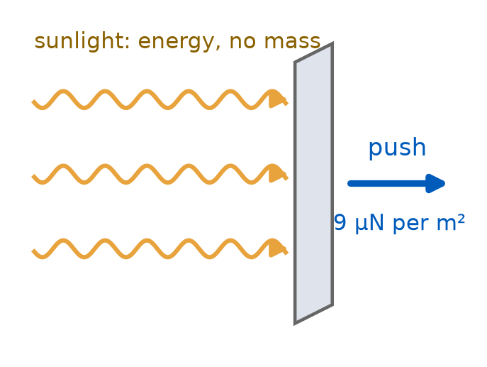
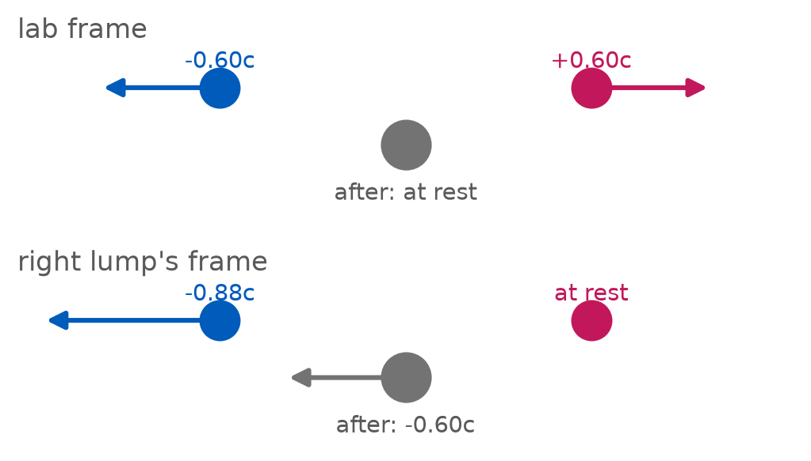
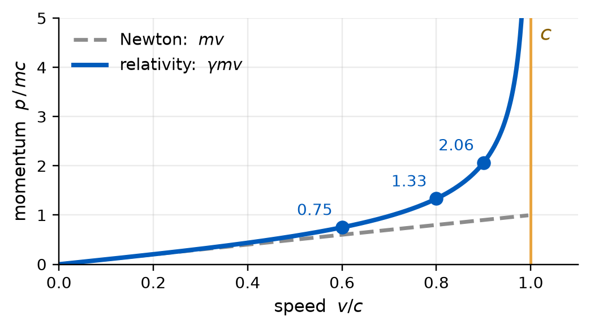
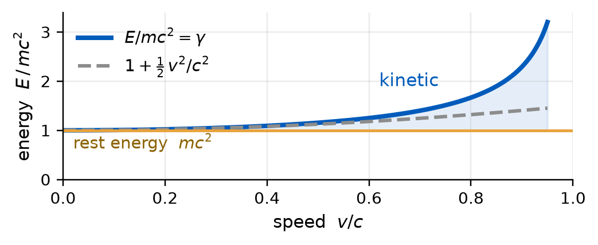
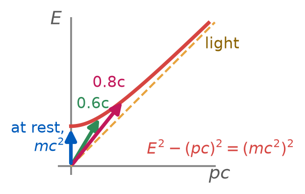
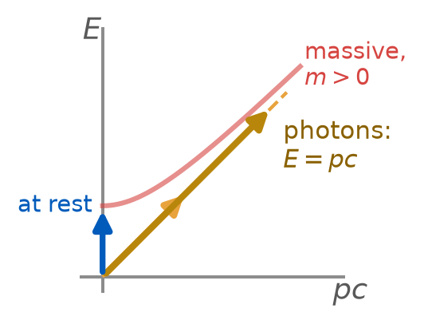

PHY 208 · Special Relativity · Lecture 11
2026-09-29
Four presentations today: Poincaré, Fizeau, Maxwell, Fresnel. 12 minutes each. Then the exam, explained, then 20 minutes of physics.
One question per presentation in that group’s UB Learns topic, posted while they present.
Prep check 5 closed at 10:30. Milestone 1 due Fri Oct 2, one submission per group. PS 5 due Sun Oct 4. Exam 1: Tue Oct 6.
No demonstration this week. The notebook rests until after the exam.
Four presentations, 12 minutes each.
| group | exercise | |
|---|---|---|
| 1 | Poincaré | TW 5-4 — the pole and the barn |
| 2 | Fizeau | TW L-16 — light dragged by moving water |
| 3 | Maxwell | TW 3-6 — down with relativity! |
| 4 | Fresnel | TW L-9 — the headlight effect |
8 minutes at the board, then 4 minutes of questions. The questions carry the grade.
Everyone else: one question per presentation, in that group’s UB Learns topic.
| When | 11:00 to 12:20, in this room. |
| Bring | a pencil, a ruler, and coloured pencils. A calculator is allowed, but there is nothing on the paper that needs one. |
| Do not bring | any electronic device. Phones, laptops, watches that measure time dilation. |
| The paper | 42 points, four parts. |
| part | what | practise with |
|---|---|---|
| A | general questions on special relativity | the lecture, the textbook |
| B | problems | the concept questions since L05 |
| C | problems, drawn on spacetime grids | the pair activities |
| D | out-of-the-box questions | nothing. Think. |
Drawing over calculation. Thursday is a pair run of Part C with fresh numbers. Bring a ruler.
A photon has no mass and moves at the speed of light. Sunlight, all the same, pushes a sail.
(a) Zero: kinetic energy is one half of mass times speed squared, and a photon has no mass
(b) Infinite: it moves at the speed of light, so the factor gamma is infinite
(c) It carries energy, but not kinetic energy; light energy is a different kind of energy
(d) All of it: a photon is nothing but motion, so every bit of energy it carries is kinetic

Two identical lumps of clay meet head-on at \(0.6c\) and stick. In the lab the total momentum is zero before and after.
Now watch from the frame of the right-hand lump.
Newton’s \(\sum m\vec v\): before \(-0.88\,m\), after \(-1.20\,m\). Not conserved. Same events, other frame, broken bookkeeping.
For the photon: Newton’s formulas are low-speed, and a photon is never at low speed. So \(\tfrac12 mv^{2}\) was never the formula to ask.

Newton: \(\;p = m\,\Delta x/\Delta t\). Whose \(\Delta t\)? The lab’s: a frame-dependent length over a frame-dependent time.
Use the one clock every frame agrees about, the particle’s own \(\Delta\tau\):
\[p = m\,\frac{\Delta x}{\Delta\tau} = m\,\frac{\Delta x}{\Delta t}\,\frac{\Delta t}{\Delta\tau} = \gamma\, m\, v\]

\(p = \gamma m v\). The speed saturates at \(c\); the momentum does not.
For the photon: no clock of its own, no \(\Delta\tau\), so this route cannot start. We need a formula that never divides by its clock.
A displacement in spacetime has a time component too. Divide it by the same clock: \(\;m\,\dfrac{c\,\Delta t}{\Delta\tau} = \gamma m c\).
Times \(c\), and \(\gamma\) expanded for small \(v\):
\[E = \gamma m c^{2} = m c^{2} + \tfrac12 m v^{2} + \dots\]

\(E = \gamma m c^{2}\). At rest \(E = mc^{2}\), the rest energy; Newton’s \(\tfrac12 mv^{2}\) is only the next term. Kinetic energy is everything above the rest energy: \(E - mc^{2}\).
For the photon: kinetic energy is \(E - mc^{2}\), so the question is now sharp: what is a photon’s \(mc^{2}\)?
The two components make one arrow, Taylor and Wheeler’s momenergy, \((E,\ pc)\). Its invariant, like \(\Delta s^{2}\) for a displacement:
\[E^{2} - (pc)^{2} = (mc^{2})^{2}\]

Mass is the invariant length of the momenergy arrow, not something that grows with speed. \(E\) and \(p\) grow; \(\gamma m\) is a component, not a mass.
For the photon: only \(E\) and \(p\) needed, no clock. One fact left: its length.
| photon | massive particle | |
|---|---|---|
| speed | \(c\), always | anything but \(c\) |
| rest frame | none | one |
| needs \(\gamma\) | no | yes |
| \(E\) and \(p\) | \(E = pc\) | \(E^{2} = (pc)^{2} + (mc^{2})^{2}\) |

The opening question: \(m = 0\), nothing to subtract, so the kinetic energy is all of it: \(E = pc\). The arrow lies on the light cone, zero length, not zero arrow. Light is the simple case.
| Presentations | four groups — Foucault, Young, Kennedy, Lorentz |
| Where \(E = mc^{2}\) bites | the nucleus, the Sun, a PET scanner |
| The review | Part C with fresh numbers, in pairs; a Part-A drill |
| Milestone 1 | due Fri Oct 2, one submission per group |
| PS 5 | due Sun Oct 4 |
| Prep check 6 | due Tue Oct 6, 10:30, the morning of the exam |
A classmate says: “Nothing goes faster than light, so there has to be a maximum momentum as well.”
Asked aloud — nothing to submit tonight.
\(p = \gamma m v\). The speed saturates at \(c\); \(\gamma\) does not. Push harder and the momentum keeps growing, the speed barely moves. That is what the LHC’s magnets are for.
PHY 208 — Relativistic Momentum and Energy Tim Thomay · University at Buffalo · Fall 2026
Course material licensed CC BY-SA 4.0
Images retain their original licenses — see img/CREDITS.md